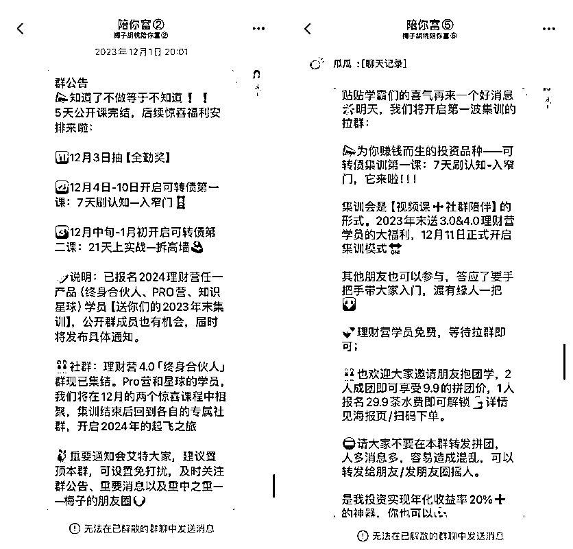
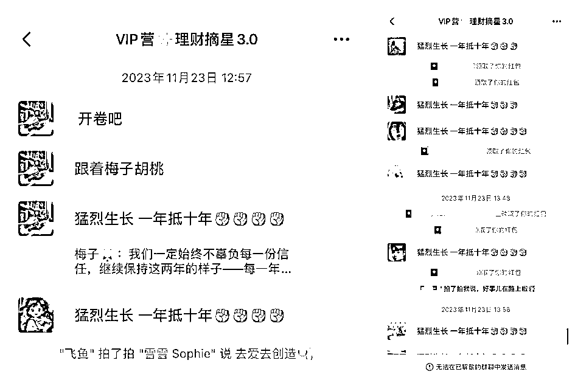

来源：https://a0nfyti51f.feishu.cn/docx/J8xZdIGEronfDwx1AtMcNrTYnXe
大家好呀，我是梅子，上次在生财发帖，还是在去年7月27号，https://t.zsxq.com/18iLrX2G0
当时复盘的是年营收36万的成绩，这次，是5天过百万（高客单+中客单）。配图中是当时先拉起的高客单的群（群发售招了近50人，客单价2万），中客单的群是隔了1个月后拉的（当场发售前50位几乎是当天就被抢完了）。我做的是培训，基本就是怼时间，所以营收大头就是利润。
距离这次发售已经过去了4个月，这个帖子其实本该早就出炉的，但招完生一直忙着交付，也花了些时间接受和消化这个结果。现在基本一切都稳稳运转了，终于可以来兑现这个帖子了！
我是从2022年8月底才开始联合生财圈友@胡桃 做理财营这个产品的，运营了1年多的产品在一次准备得其实有些仓促的发售中能有这个结果，远远超出我的预料。
在生财众位优秀的圈友和几位宝藏老师的耳濡目染下@芷蓝@梁靠谱@理白先生，学到了太多。是你们让我挖掘出了令我自己都意想不到的潜力，梅子千恩万谢都不为过。今天且用这篇帖子作为回馈，拆解下这次发售的经验分享给圈友们。如果能对大家有启发，不胜荣幸。
冰冻三尺非一日之寒，滴水穿石非一日之功。这次发售，看着5天百万--时间很短，背后站着的是我8年多的理财经验➕1年多的社群交付经验。这次群发售，是积累到一定时间的一次爆发。我会把这次发售的前因后果--冰山之上的那个角角，和冰山下方的那些大头都给大家拆解清楚。本次拆解分为以下6个部分：
一、前期准备，关键环节
二、 各方布局，剑指成交
三、喜忧参半，一些意外
四、素人IP，长坡厚雪
五、路不白走，避坑指南
六、前行的光，师恩难忘
文章近万字，思维导图先行：
最开始想做一场公开课，是去年9月底，我们上一期（3.0版本）理财营稳定运转中，当时的产品体系价格都是4位数，对于不熟悉我们的朋友，缺少一个相对低价的产品给他们体验。我们意识到这个问题有一段时间了，就报了些课去学习更成熟的产品模式，慢慢补上了缺失的【低客单部分+高客单部分】。
到了9月底这个节点，基本把产品升级的方向和框架搭好了，这个更新的产品体系需要一次公开露面的机会。
那干脆做个免费版的公开课，一方面喊人来免费体验，一方面揭幕新的产品体系。这样想上车的和想续费的，都有了契机。
这里可以给到大家做产品的建议是：一个相对完善的产品体系，需要有低-中-高，这3个价格档位。
我们3.0版本的产品，主要做的是中客单，就有些低不成高不就，运行到后面就比较被动。一方面观望的人不想一下子掏4位数这么高的代价来试错，另一方面，想深度和我们绑定的人也没有付高客单的入口，就很是问题。
如果是新手从0开始做产品，那可以从低客单开始，慢慢升级为中客单。我们前3期就是这么做的，前2期其实都是低客单--2位数到3位数的产品价格，用低价让大家以最低成本试错和了解我们的实力。当信任逐步建立了，就可以铺中-高客单了。但前端的低客单一定要有，不然增量这块很容易受阻和停滞。
这是我当时在团队小群里第一次讲到要做一次公开课的聊天记录，9月底有了这个想法：
于是10月-11月开始筹备，主要筹备了以下事宜：
最终定下的公开课内容是这些：
提前20天左右在朋友圈铺垫和预热，把日常投资的感悟、现有付费社群的报喜都和公开课结合起来，邀请感兴趣的人进免费群；分享中的时候，碰到特别有感触的点也会写在朋友圈，提醒没看到的人进群。
付费用户熟悉我们，这种公开的免费活动一年也就这1次，她想到身边人有需要的就去推荐了，如果推荐来的有成交，会有佣金；就算没成交，她也算是给朋友提供一个很好的学习机会。怎么着都是收获，于是就会有人愿意帮我们去邀请朋友和转发朋友圈。
这里其实也有个地方我们没提前做功课：我们应该帮着这些有意愿的人，设计和提供朋友圈文案作为参考的。
因为很多人平时没有发朋友圈的习惯，突然发这个类似广告的内容，心里会有很大的阻碍。尤其还是理财这类比较敏感的话题。我们应该更为她们多想一步，提供些文案或者话术给她们选择。这样还能更进一步降低她们行动的难度。不然光靠自发行为和意志力去做，对于她们的要求有点过高了。
除了付费用户的自发推荐之外，我还找了关系比较好的KOL帮我推荐。这里特别感谢理白和梁靠谱，他们让我见识到了个人品牌打响之后的威力。关键人物说一句话的事儿，比我自己吭哧吭哧努力好久都管用。
物料和人员说完，来复盘下分享中的内容和节奏。
这两块有做得好的地方，也有回看觉得做得很不好的地方，我来分别拆解一下。
内容的大头我早早准备好了，但第一天开场的部分总是不满意，改了好多遍都觉得差点意思。20号当天我还在昆明，刚参加完粥老师的见面会，独自一人坐在宾馆的写字台前。
昆明那么多好吃的美味和好看的风景，我都无心去看。怕自己不吃饭分享的时候没精神，就点了个牛肝菌炒饭外卖--真的挺好吃的，但只吃了几口，又去忙了。以至于到现在我还特别怀念那一盒牛肝菌饭，那么好吃被我浪费了80%呜呜呜，暴殄天物了对不起！
当时压力好大，第一次做这种大型的群发售活动，几个公开群里有好多朋友邀请来的人，我就特别想留个好印象，特别想做好。但临近分享，第一天分享的开头我还没有想好，急得在酒店里掉眼泪。
情绪释放后，就不管了，清空所有的杂念，集中100%的注意力去写。不去想外在的期待或者可能的效果，只说我想说。什么拯救过我，我就把它一五一十写出来。抱着分享的心去写这一切，成败皆是反馈。
当天分享的效果还是不错的，印象最深的一句评价是：“这是我见过财富观最正的理财博主了”
总结4个最重要的经验：
尤其我是从很低很低的起点上来的，到现在挺自由的一个状态，这个巨大的转变就会让人对我产生兴趣。而只有她对我产生兴趣了，她才不反感我讲东西。因此，我第一天的分享里，40%以上都在讲个人成长故事和总结的经验教训，这部分是信任的基石；
比如设置作业环节、作业点评环节和提问环节，都是很有效地能提高用户参与度的地方。
做得不好的地方：
分享太密集，内容太多，集中在了5天，每次分享几乎都有2个小时，而且全是【文字+少量图片】分享，形式太单一，容易视觉疲劳。
当时只想缩短周期，让参与者不至于到后期就疲了，就把分享挤在了5天里。这个就太密了，而且全是文字，真的安排不妥。其实我以前是直播过的，完全可以胜任直播这个形式。我如果能提前想到搭配直播答疑，减少文字比例，效果肯定会更好。
还有当分享的内容多且安排了课后任务的时候，也可以考虑分享1天休息/答疑1天，适当拉长周期。因为我们是理财赛道，本来就是一个挺需要时间来彼此熟悉、慢慢建立信任的赛道。时间太短了，观众的信任感还没有建立起来，尤其是我没有搭配上直播这个环节，真的是大失误。
另外，文字分享的时候，节奏感也要注意，2个小时是真的偏长，每次文字分享控制在1小时左右，最好不要超过1个半小时。
成交这个事儿，一定不是放在发售最后一天说的。因为大家的注意力主要就集中在第1-2天，第1天直接说的话我觉得有点唐突，第2天我就借着用户的私聊提问在群里答疑，这样就埋下了正式产品的种子。所以我是从第2天开始说产品的事儿的， 接下来的每天也都在说。
每天揭幕一点儿，并让感兴趣的用户私信我【预约】二字登记。这样我好打上标签，方便给他们开最优惠付款通道。
我本来也有些担心这种安排会不会把人吓跑，但想想这种担心其实没啥必要。毕竟商业就是商业，这个发售就是为了卖货啊，不然费这么大劲儿干啥。明明白白地说清楚怎么买--以及怎么操作能拿到最优惠的价格，这才是对感兴趣的用户负责。
早点说她们也早安心、早做准备。
没有人是傻子，你就正大光明地把该交待的交代清楚，遮遮掩掩的反而效果不好，并且用户也没有及时得到她最需要的信息，得不偿失。
放下心理魔障，就大大方方的。咱不偷不抢，就是个双向选择。哪怕有人真的因为看到你在说正式产品的事儿而消失，那也是最有效的筛选。
每天分享的开头和结尾也都可以提醒下【预约】这个动作--重要信息放在显眼的位置，找你预约的人会陆陆续续来的。我每提醒一次就会有些人发现之前确实错过了这个重要信息，然后就来找我预约。
其实这里我也有一点疏漏：
如果这里能放个群接龙，会更好地带起从众效应。
当时我只顾着私聊我打标签这事儿了，没有想到效率更高、效果也更好的接龙的方式，大家避个坑。群运营，真是一件细活。下次发售前，这些细的动作就应该提前写成一张表做成SOP，一个个打钩，就不至于在重要环节有疏漏了。
公开群的提前透露产品、以及提醒预约能拿到最优惠价格，都是为了让一部分人先动起来。一方面让主理人对转化效果能心里有数、另一方面也给最感兴趣的用户先发制人的优势，双赢。这样也有一些紧迫感，好东西需要蹲守和上手抢。如果随随便便就能以同样的价格买到，她就不会太关注群消息、可能跟着跟着就跟丢了。
除了群通知、让预约和打标签之外，我在朋友圈也会提醒。万一群消息没注意看，朋友圈也能再做一次触达。
接下来就到了成交的部分，因为我们发布的产品有3个，所以提前知道这3个产品、做出选择、以及抢到最优惠价，都需要时间。
于是在公开课倒数第二天，我就给已经预约过的人挨个发提醒，告知他们提前1天可以知道产品详情并可以享受最优惠价格。早就是优势，按照付款顺序先到先得↓
这样感兴趣的人有足够的时间去查看详情，然后挑选合适的付款，我们这边做好登记就行。
最后一天，分享内容结束，前面的预热提醒也全都到位了，我们用起了群接龙，一边群接龙，一边收钱，一边在群里同步最优惠名额倒计时：

整体效果还是不错的，优惠名额被抢的很快↑
这里能做的更好的点：
我后来学习了更多群发售的案例，发现其实还有一步没有做到位。就是对于那些提前预约但私信没有回复的，其实可以做个回访的--问问为啥没买、有啥顾虑之类的，没准还能追几个单。
成交这块还是过于佛系了点，下次争取在这块有改进。
这次发售，最大的惊喜和业绩来源，莫过于终身合伙人这个产品。终身合伙人这个产品，是我们第一次发布高客单，我都不确定能不能卖出去几个，纯粹是为了把产品体系搭建齐全而设立的↓
这个产品，面向的客户群体肯定不是公开课第一次来的人--毕竟2万的客单价，新人不可能买。我们就提前让老客户知道了这一期产品的升级，在付费群内告知了这个产品，并让有意向的来续费或者升级到合伙人。
当时也做了个接龙，毕竟也设置了前10位最优惠价，先到先得。
其实当时设置前10位，是给自己定的一个目标。前10个肯定是最信任我们的，且我当时真的不确定能不能招满10个，于是就设置了前10的最优惠席位。也因为都是老朋友，没有让付全款，只需交1千的定金，留了3个月的补尾款时间（3个月后0逃单）。
没想到，大部分付费群内发言的人都对终身合伙人最感兴趣,看到消息之后都纷纷给我私信转账来预定了：
那天晚上我们真是又惊又喜，前10位几乎是一抢而光。然后有看到消息比较晚的朋友，我们又不忍心给她加1千，就临时做了调整，只要是当晚找我们预定终身的，都给前10位的最优惠价格。毕竟大家如此信任我们，我们也给出实实在在的回馈。
当天来找我们预定终身的就快40位了，一阵仓皇接待，连终身群都是现拉的。还经历了情绪上的大过山车，平息一点后还跟靠谱姐和芷蓝姐说来着：
这些成绩，是还没有在公开群里公布产品就拿到了的。也就是说，截止公开课前4天，我们光终身合伙人这块的营收都快80万了，加上提前来预约中客单产品并付钱了的已经有50位--每位客单价在3千左右，这块的营收已经快百万了。
战斗会不会胜利，在战斗结束的号角吹响前，已经揭晓。
但当时的我们根本顾不上高兴，因为还有一大堆收尾的事儿要做。当开心的事儿和让人揪心的事儿同时来临的时候，人总是会无限放大揪心事儿的影响，赶紧去收拾现场去了。
我们当时面临的情绪波动主要来自以下2个方面：
个别非议：
我们的所有结果基本都是公开的，我的朋友圈也很快知道了这个几天内营收百万的消息。我跟胡桃平平无奇的0号人物，凭什么一下子拿了这么个大结果？
于是就有一些难听的声音传进我们耳朵。找攻击的点自然容易，拿我们最大的结果--也就是终身合伙人的点来攻击就可以了。说卖终身产品的都是割韭菜，还有些更难听的，我就不复述了。更有甚者，来私信发小作文来质问我凭什么这么做产品。
我当时还认真跟对方解释来着，现在想来，真是纯粹把宝贵的时间浪费在了跟不值得的人费口舌上。人家是带着100%的恶意来的，我试图给人掰扯明白，压根就是没看清楚对方是人是鬼。
这样的质疑让我几乎睡不着觉，虽然只有零星的1-2个，但我害怕付费社群的其他人也会有这种猜忌。就不睡觉地把设计这个产品的初衷和我为什么确信这事儿我就是愿意做一辈子也能做一辈子的原因一五一十地写了，分享到了社群里和朋友圈里。我不知道还有多少人可能有不好的揣测，我只能尽我所能把我本意说清楚。
做任何事儿，最重要的还是图一个我们自己的心安，出现问题了就去解决问题。当时这个问题确实困扰我比较大，我就着手去解决了，该说的说完，我就不操心了，时间会说明一切。
靠谱姐说过一句话让我很受益：不要奖惩错逆。对于那些不愿意付钱还叽叽歪歪的，不要试图去说服或者证明自己，纯粹是浪费自己的时间和心力，关键是费力不讨好，白瞎了功夫。
而对于那些一言不合就给我们打钱的用户，我们应该给予她们最多的注意力，不能觉得天使用户的好是理所应当。我在招生结束之后也给了第一批合伙人很多的额外福利，比如一起在群里制定目标并督促着彼此完成、比如送生日礼物，比如告诉她们不仅可以打电话咨询我理财相关的问题，其他任何方面的话题，但凡我会，都会跟她们掏箱底--比如我还给她们做1V1的盖洛普解读，经常一解读就是2小时。
还有合伙人问我职业选择、副业可以选择怎样的路径，我都非常认真地帮她们梳理和答疑。包括合伙人心情不好、需要人倾诉的时候也会愿意给我留言，我愿意努力做那个一直可以拿来靠一靠的肩膀。
遇到非议的时候不要害怕，这条金科玉律刻心头：不要奖惩错逆，只对值得的人好。
剩余人的转化：
第二块就是剩余人的转化问题。公开课结束，我们3个产品都发布了。交付这块，其实这3个营的基础部分是重复的，总不能分3个群交付吧？另外还考虑到这几个公开群就这么解散了吗？是不是还能再捞捞一波没跟上的人？
紧急临时变通，弄了个开营前的集训。因为我们正式营是在2024年开，还有1个月，就作为送给正式营的福利。如果有营外的人感兴趣，也可以买来学，这样就把引流版的产品也推出了。

做这个低价引流版的产品甚至还有意外惊喜，我们是想通过这个产品转化那些啥产品也没买的，没想到竟然还因为交付质量太好吸引了新朋友来买终身合伙人。
这又打破了我们的想象力天花板，原来之前没有过长交付的人也愿意直接来买终身的。后来这样的例子又发生了几次，不得不说主理人和参与者是共同在赋予产品生命力的。感谢这些信任和善意，每每想起都依然觉得不可思议。
就这样，一边打战一边打补丁，边做边完善，这个公开课的前前后后，到此就结束了。但我还想说冰山更深处的东西。这次发售我学到了太多，很多道理也因此刻在了骨头里，不亚于把我整个人做了一次升级，很多心得想分享给大家。就从几乎人人都在谈的IP说起吧。
IP这个词，我几年前就听过，去2022年9月开始做理财营到现在1年半，我才发现我好像也在做着IP这么个事儿。但我啥也没有，只有8年多的理财经验和一颗真诚又愿意努力的心，然后我走到了现在。那么，作为一个十八线素人理财IP，来说说我的一些经验。
理财类的IP，教的东西离钱最近，也直面人性的贪婪和恐惧。你如果天天宣传日入1千，吸引来的就是想短时间赚大钱的人。我自问没这个本事带人赚快钱，因此，我一直坚持和宣传的，都是长期主义，是认知和实践双向并行，是注意避开各种坑、修炼面对市场波动时候的心性，是稳稳学、慢慢富。
我不会过度夸大理财的重要性，就是有些人适合在这个场域长期修炼，有些人不适合--比如已经负债累累现金流还有问题的人，比如啥也不干就想快快赚钱的人、比如喜欢无脑炒短线，动不动就一惊一乍，受不了波动，不能接受不确定性的人。
所以我在公开输出的时候，都会痛批这些行为，把不合适的人提前筛掉。这样吸引来的人真的很省心，我在交付的一年半多时间，群里的人不会因为当天大涨而上头、闹哄哄，或者在下跌的时候就哀鸿遍野，大家都很稳。不会因为某一天的波动而发群疯。
能带出来这么一帮头脑清醒、扎扎实实地做难而正确的事儿的同路人，才是我这个过程中收获的最大的财富。主动向这个世界传递你的价值观，找到一群同频的人，着实是人间一桩幸事儿。
素人IP，我们谁也不是，但我们也可以是任何人。在起步期间，这批愿意来支持你的用户都是一个个的天使，要使出浑身全部的劲儿对她们好，一直保证交付质量。一边提供给她们解决问题的专业价值，一边提供情绪价值。
于理财营来说，我一边教她们理财--理论和实践都教，喂到嘴边式地教；一边给鼓励、给夸夸、给心理按摩（大跌时候的心理按摩，大涨时候的提醒）、给节日的走心祝福（感恩节的感谢，圣诞节的年终复盘，新年心愿卡片）、给我能给的所有仪式感，把她们捧在手心上， 并带出结果来。
想用户所想，又比她们多想一步，时不时有些小惊喜，像礼物一样出现在她们的生命里。毕竟，一起度过的那些时间、一起经历的那些过程是最珍贵的，像《小王子》里说的那样：正是你花费在玫瑰上的时间，才使得你的玫瑰花无比珍贵。
（每次都是千字长信，图太长，只截取了开头）
真心绝对是可以被感受到的，势能是需要积累的，信任也是需要时间堆出来的。因为一无所有，所以用尽全力。
做一个领路人，我知道你也会害怕， 会不安，会害怕自己不配得这束聚光。
但，你必须咽下所有这些自我怀疑和担心害怕，坚定地走下去。
我之所以有今天这一点小成绩，很大一部分要感谢我对自己的这场革命。我这样一个日复一日年复一年隐身的小透明，突然因为某种使命感开始站出来分享，开始勇敢地突破自己，并且一步一步地向前走，神挡杀神，佛挡杀佛，最终还拿到了结果——
这种好莱坞式大电影的剧情发生在了你认识的人身上，你会不会也想靠近这个人？你会不会也被这份转变影响到？
这种蜕变的力量天然自带吸引力。因为你也会觉得：平凡如她能这样，那我假以时日也可以。
我们的存在就是要给身边人这种希望感。因为一个认认真真做事、非常非常努力的好人，通过她孜孜不倦的努力，终于在很多年后实现了她的突破——这件事本事，就已经足够给人力量。
这种事情不应该只存在电影和电视剧里，它真实地在现实世界里发生，比大电影都鼓舞人心。
因此，你就要一直一直做那个：
勇敢，主动，能量满满，内核稳定，百折不挠，虽败犹荣，屡败屡战，永远饱含希望的人。
你要做像灯塔一样的人，你不能只当观众。
这趟自我革命的旅程值得的，它会像滚雪球那样，长坡厚雪，越滚越大，越滚越值钱。

第1次做大型群发售，3个踩了的坑分享给大家：
我们这块完全没准备，临时找了几个人，但都是没有怎么运营过社群的伙伴。我们也没有提前培训和预备他们的状态--比如说明哪个时间点、哪个节点需要她们出现等等。没有提前规划、单次的分享又很长，人家中途有事去忙别的了也太正常，导致回应稀稀拉拉的，这块有很大的提升空间；
除了文字分享外，搭配直播效果肯定会更好。周期适当拉长没有关系，节奏上不能堆得太满。内容如果多，就不要一下子密集地倒完，一定要站在用户视角去看，怎么才能让他们更好地消化吸收和更愿意来互动。
无论是开直播间还是适当拉长分享周期（比如分享用1天时间、消化吸收和回答问题用1天时间这样间隔着来），也不要填鸭式地喂。参与者的互动和感受很重要，要看见他们；
有突发情况很正常，预留时间去应对就好。比如我们这次临时做了好几个计划外的调整，在不违背大原则的情况下，以用户利益为中心，结合具体情况灵活应对就好。
说一个小插曲↓群里混进来打广告的很正常，结合情境机智应对，还能为这次分享加上一道独特的风景线。
此文感谢和我一起做理财营的顿哥、胡桃和瓜瓜。没有你们就没有理财营这个产品。你们一路指导我、陪着我打仗，没有你们也没有现在的梅子。有你们这样的老师和战友，梅子三生有幸。
此文感谢芷蓝姐，靠谱姐和理白先生。你们是我前行的光，终身合伙人这个产品的启发也是来自玩赚合伙人。感谢你们打开了我一扇扇新世界的窗。感谢你们教会了我很多不内耗的原则和道理，感谢你们愿意作我的靠山，随时随地都愿意为我撑伞。
此文感谢生财有术这个大家庭。我是2023年4月加入生财的，差不多快1年了，在这里认识了太多厉害的人物，也把我的格局撑得无限大。谢谢生财教我的一切，带领我认识的无其多大宝藏，如果没有生财这个平台，我的产品不可能迸发出令曾经的我都无法想象的能量。谢谢生财赐予平凡如我这般人的光。
送看到这里的你一段我很喜欢的话：
赶路的人一定能遇见同行的人吗？
但铺路的人一定会照耀迷路的人
曾经的我们都做过很野的梦
扑过很多次空
白云苍狗四季枯荣
是谁？
依然赤着脚昂着头 奔跑在烈风中
兵临城下 萤火中的凛冬
三十而悦 平凡而后勇
已经踏过了千层浪却依然挚爱着
像刀锋一样
转眼渡过了万重海 依然骑鲸追梦
请你别担心 请你别放弃
清风拂明月 山海有相逢
--出自《乘风破浪的姐姐》
祝你在成为光的路上，乘风破浪。
以上便是我全部的复盘了，谢谢你的观看，本文的思维导图在尾巴这里也放一张：